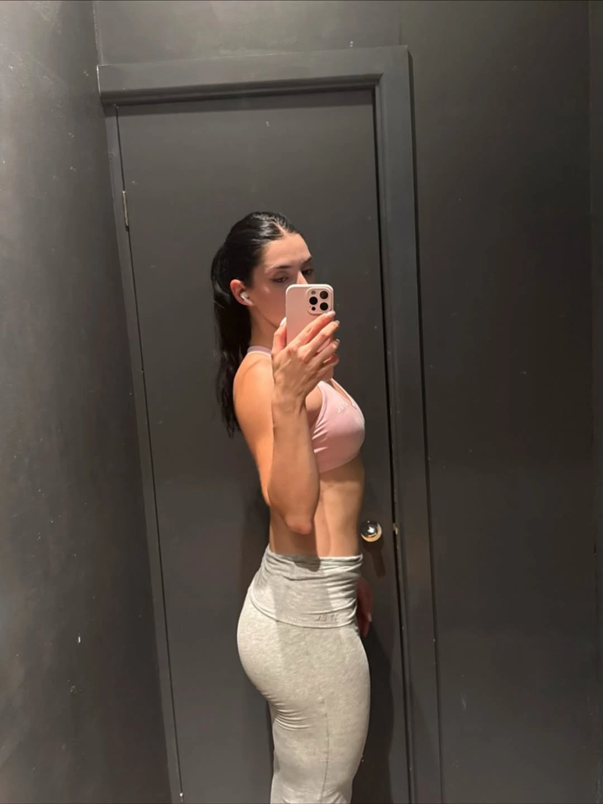
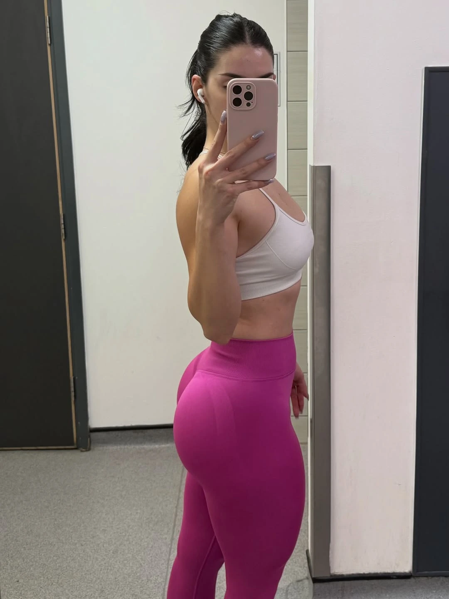
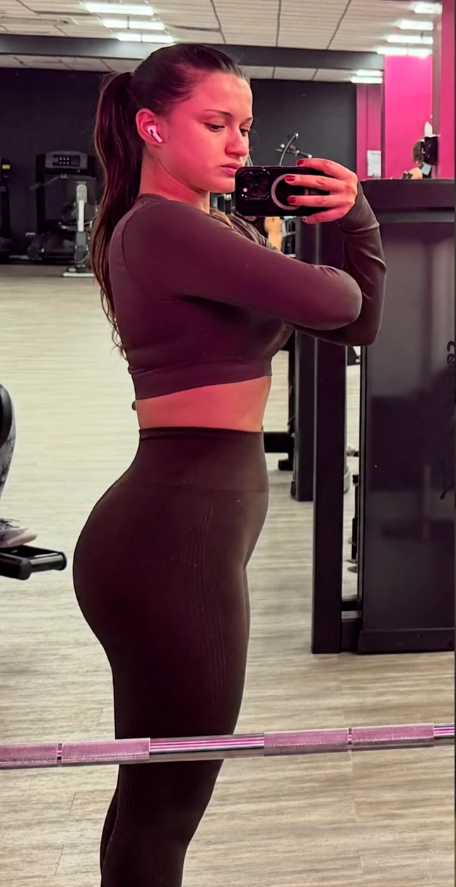

Seu acesso está sendo liberado — não feche esta página
Compra do BumbumFlix aprovada
Antes de você acessar o seu BumbumFlix, preciso te contar o fator invisível que separa um bumbum bonito… de um corpo de musa por inteiro.
Parabéns, minha amiga. O seu bumbum já ganhou o método certo. Agora deixa eu e o meu time cuidarmos do restante do seu corpo com treino e alimentação feitos pra VOCÊ.
Leia até o fim — leva só 3 minutos
A minha equipe já está liberando o seu acesso completo ao BumbumFlix. Em poucos minutos, a plataforma e todos os bônus chegam no seu WhatsApp e no seu e-mail.
Mas fica comigo só mais 3 minutos. Porque a partir de agora você pode acabar de vez com aquele ciclo de treinar, tentar fazer dieta, sacrificar o descanso e o tempo da família… e ainda assim olhar no espelho e não ver o corpo que você merece.
Treinando só 30 a 45 minutos por dia com a Sequência Ativadora, o seu bumbum vai receber o estímulo que anos de fichas genéricas e treinos de internet nunca conseguiram entregar. O seu bumbum tá garantido — agora é questão de tempo.
Mas presta atenção no que eu vou te falar agora.
Em mais de 10 anos atendendo todo tipo de mulher e acompanhando centenas de alunas, eu vi a mesma cena se repetir: a aluna transforma o bumbum… e mesmo assim, na frente do espelho, sente que ainda falta alguma coisa.
Porque o que faz você se sentir musa não é só o bumbum. É o conjunto.
O seu bumbum se destaca MUITO mais quando o resto do corpo acompanha. Quando a cintura tá desenhada. Quando a coxa tá firme. Quando a barriga tá sequinha.
Quando o flanco não fica marcando na cintura da calça. Quando o braço fica bonito num cropped. Quando até o rosto afina e a papada deixa de comandar o ângulo das fotos.
É a PROPORÇÃO que faz o seu bumbum aparecer de verdade.
É por isso que as minhas alunas com acompanhamento personalizado não transformam só o bumbum — transformam o corpo inteiro, de uma vez. Enquanto a mulher que tenta cuidar de uma região por vez passa anos colecionando resultado pela metade.
Porque eu sei o que ainda te incomoda quando você se olha no espelho:
A barriga que não seca de jeito nenhum — e aparece por baixo de qualquer blusa mais justinha.
O flanco que transborda na cintura da calça e forma aquela dobrinha por cima do jeans.
A gordurinha do tchauzinho, que balança toda vez que você levanta o braço.
A papada que aparece em toda foto — e te obriga a escolher o ângulo antes do sorriso.
E junto com esses incômodos, surgem aquelas dúvidas, né?
“Será que esse número de séries é certo pro meu nível?”
“Eu odeio fazer o búlgaro. Por o que eu substituo sem prejudicar o resultado?”
“Não tô sentindo o glúteo nesse exercício… será que tô fazendo errado?”
“Será que tô comendo certo — ou tem alimento que parece saudável me sabotando em silêncio?”
E sabe o que a maioria faz? Tenta resolver tudo sozinha: um treino de internet pra barriga, um desafio aleatório pra coxa, uma dica de blogueira pro braço e uma dieta copiada que não respeita nem a fome, nem a rotina dela.
Só que nada conversa com nada. Ela perde tempo, erra na quantidade, faz o exercício errado pra ela, come menos ou mais do que precisa e fica insegura.
E essa insegurança vai corroendo a motivação… até ela parar.
Uma dúvida sem resposta vira um treino mal feito…
Um treino mal feito vira um mês sem evolução…
Uma alimentação no achômetro deixa o corpo sem o material certo…
E uma região esquecida vira aquela sensação de que “sempre falta alguma coisa”.
O problema nunca foi você.
Nunca foi a sua genética. Nunca foi a sua idade. Nunca foi falta de força de vontade. É que sempre te venderam o corpo em pedaços, com treino e alimentação que não foram feitos pra você — e plano genérico entrega resultado pela metade, em câmera lenta.
Então deixa eu te fazer uma proposta.
Eu quero pegar você pela MÃO, cuidar do seu shape por INTEIRO e ACELERAR o seu resultado — do mesmo jeito que eu faço todo santo dia com as minhas alunas: com a Consultoria Musa Elite.
Aqui eu monto um acompanhamento 100% personalizado não só pro seu bumbum como também pro resto do seu corpo — coxa, barriga, cintura, flancos e braços — tudo evoluindo junto, em proporção, feito sob medida pro SEU corpo, pra SUA rotina e pros SEUS objetivos.
E ó: eu não vou cuidar do seu treino e deixar justamente a alimentação no chute. Dentro da Consultoria, você recebe a Nutrição Ativadora, calculada pelo nutricionista da minha equipe pra dar ao seu corpo a proteína, as calorias e as refeições que o SEU objetivo pede.
A Sequência Ativadora garante o estímulo do seu bumbum. A Consultoria Musa Elite pisa no acelerador — e cuida do conjunto.
Não é mais um curso pra assistir. Não é treino de um lado e dieta do outro. É um acompanhamento de bolso — com um plano no SEU nome.
A Consultoria Musa Elite está dividida em 3 pilares
1
Pilar 1
Plano de treino personalizado — pro corpo inteiro
Cada exercício é escolhido pra VOCÊ: pra firmar a coxa, secar a barriga, desenhar a cintura e definir o braço — no seu nível, na sua rotina e no espaço que você tem, em casa ou na academia.
Tudo é desenhado pra encaixar com a sua Sequência Ativadora: o bumbum segue como prioridade, e o resto do corpo entra pra acompanhar. A cada 30 dias, a equipe avalia a sua evolução e atualiza o plano pra nenhuma região ficar pra trás.
2
Pilar 2
Nutrição Ativadora personalizada
Pensa comigo: o treino é o estímulo. A comida é o material que o seu corpo usa pra construir o resultado. Se falta proteína, o bumbum não cresce como poderia. Se sobra caloria, a barriga não vai embora. Se você corta demais, pode murchar justamente o que queria empinar.
Por isso o nutricionista Tiago Gimenez, da minha equipe, calcula proteína, calorias, porções e refeições pro SEU objetivo — usando alimentos que você gosta. Você recebe substituições e ajustes mensais pra secar sem jogar o bumbum fora, construir massa sem deixar a barriga crescer e parar de depender de “comida saudável” no achômetro.
3
Pilar 3 — o acompanhamento
Comunidade e direção quando a rotina apertar
Um grupo só de mulheres na mesma jornada que você, onde uma puxa a outra pra cima. Sem energia tóxica de competição, sem julgamento de corpo, sem mulher rebaixando mulher.
E quando bater dúvida de treino, alimentação, adaptação ou execução, eu e o meu time estamos lá dentro. Porque eu não quero te entregar um PDF bonito e sumir. Quero estar perto justamente no dia em que a rotina apertar e a vontade de desistir aparecer.
E na prática, o que isso muda? Deixa eu te mostrar.
Eu poderia ficar aqui tentando te convencer. Mas vou fazer mais simples: deixa eu te mostrar o que acontece com a velocidade do resultado quando o plano é feito pra UMA mulher específica — pro corpo inteiro dela.
Caso realJuliana — travou no platô
Onde ela travou
A Juliana evoluiu rápido nas primeiras semanas… e do nada o corpo dela parou de responder. Ela treinava certinho e, mesmo assim, nada mudava no espelho.
O que eu fiz
O treino tava certo. O problema era invisível: a alimentação dela tava desalinhada do treino — cheia de “comida saudável” sabotando ela em silêncio. O plano alimentar foi realinhado sob medida.
O resultado
Platô destravado — e a evolução voltou a aparecer no corpo.
Antes

Depois

Caso realCláudia — o bumbum crescia, mas a pochete não saía
Onde ela travou
A Cláudia tinha o problema contrário: o bumbum respondia bem, mas aquela barriguinha incômoda não saía de jeito nenhum — por mais abdominal que ela fizesse.
O que eu fiz
A ficha genérica que ela seguia não foi montada pro corpo DELA. Eu refiz o treino do zero — pro formato do corpo dela, pro nível dela e pra rotina dela.
O resultado
Bumbum crescendo E barriga mais seca — as duas coisas no mesmo acompanhamento.
Antes

Depois
Caso realVanessa — queria secar sem perder o bumbum
Onde ela travou
Toda vez que a Vanessa tentava secar por conta própria, o bumbum que ela tinha construído com tanto esforço ia embora junto.
O que eu fiz
O treino foi ajustado para preservar o glúteo, enquanto a alimentação passou a entregar a quantidade certa de proteína e calorias pro objetivo dela — sem corte desesperado e sem chute.
O resultado
Barriga mais seca e bumbum preservado — o conjunto que ela queria.
Antes
Depois
Resultados individuais e variam de pessoa para pessoa.
Percebe o padrão? Não foi falta de esforço. Não foi idade. Não foi genética ruim. O que faltava era o ajuste certo, pro corpo CERTO, na hora certa. É isso que eu quero fazer por você — com treino e alimentação sendo ajustados dentro do mesmo acompanhamento.
“Mas Murilo, como vocês vão saber o que EU preciso?”
É simples — e talvez seja a primeira vez que alguém vai realmente parar e te OUVIR. Não como “mais uma aluna”, mas como a mulher específica que você é.
Você garante a sua vaga aqui hoje.
A minha equipe te chama no WhatsApp e no e-mail com um questionário rápido.
Você responde com calma: rotina, limites, objetivo, regiões que mais incomodam, equipamentos, restrições e os alimentos que gosta de verdade.
Em até 24 horas, o plano completo chega no seu celular — treino pro corpo inteiro, Nutrição Ativadora e acesso ao acompanhamento.
A cada 30 dias, treino e alimentação são recalibrados conforme o seu corpo evolui.
Eu não trouxe qualquer nutricionista pra cuidar de você
Eu conduzo a estratégia de treino e o Tiago Gimenez monta a sua Nutrição Ativadora. Além de ser meu amigo e fazer parte do time, foi ele que me preparou quando eu competi. Então eu posso te falar com tranquilidade: quando o assunto é alimentação pra mudar o corpo, é exatamente o profissional que eu gostaria de ter do meu lado.
A ideia é essa: você abre o celular antes do treino e já sabe EXATAMENTE o que fazer — pro bumbum e pro resto do corpo. E quando for comer, sabe o que montar e o que substituir sem transformar a vida numa prisão.
É como ter treinador e nutricionista no seu bolso, acompanhando a mesma transformação.
E não importa se você treina em CASA ou na ACADEMIA
Se você treina em casa
Treino personalizado usando o espaço e os equipamentos que você realmente tem.
Corpo inteiro trabalhado sem transformar a sala numa academia.
Plano alimentar pensado pra rotina da sua casa e da sua família.
Se você treina na academia
Treino que prioriza as regiões que VOCÊ precisa desenvolver.
Adaptação aos aparelhos disponíveis na academia que você frequenta.
Direção clara pra entrar, executar e sair sem perder tempo.
E a sua alimentação não chega como uma dieta pronta de gaveta
E fica tranquila: não é frango seco com batata-doce todo santo dia. A Nutrição Ativadora respeita os alimentos que você gosta, a sua rotina, as suas restrições e o objetivo que o treino está perseguindo. Você recebe porções, substituições e um plano possível de cumprir sem transformar a sua vida numa prisão.
Demonstração da organização
Um cardápio que diz o que fazer e como substituir
Os horários e alimentos abaixo são ilustrativos. O seu plano real será calculado individualmente depois do questionário.
ManhãRefeição com alimentos preferidosproteína + energia
AlmoçoPorções calculadas e substituiçõesmeta do objetivo
LancheOpções que cabem na rotinatrocas equivalentes
JantarOrganização flexível do diasem achômetro
E ao entrar hoje, você ainda ganha os bônus do acompanhamento
Lives quinzenais exclusivas BÔNUS
A cada 15 dias eu entro ao vivo com as alunas para responder dúvidas de execução, alimentação, adaptação de treino, viagem, TPM e rotina. Se não puder assistir ao vivo, a gravação fica disponível.
Desafios temáticos de 30 dias BÔNUS
Desafios focados em regiões específicas entram por cima do seu plano personalizado, na hora certa, sem bagunçar o conjunto.
Guia de Suplementação Natural BÔNUS
Uma direção simples para entender o que pode fazer sentido pro seu objetivo e o que é só desperdício de dinheiro.
Antes de eu falar de preço, deixa eu te perguntar:
Quanto vale abrir o celular antes do treino e ter CERTEZA de que cada exercício aproxima você do corpo que quer — sem dúvida, sem chute e sem perder tempo?
Quanto vale comer algo gostoso no fim de semana sem culpa, porque você sabe que a alimentação da semana inteira está trabalhando a favor do seu bumbum?
Quanto vale vestir a calça sem o flanco transbordando, usar um cropped sem esconder o braço e voltar a gostar das suas fotos?
Quanto vale ter um treinador e um nutricionista olhando pro seu corpo a cada 30 dias, antes que um platô vire mais uma desistência?
E quanto vale, daqui 90 dias, se olhar no espelho e ver o conjunto — bumbum empinado, cintura desenhada, barriga sequinha — e pensar: “Caramba… agora eu tô gostando do que eu vejo”?
Eu imagino que isso tenha um valor difícil até de colocar em número, né?
Várias alunas me cobram pra eu aumentar o preço — porque dizem que a entrega aqui é maior do que consultoria que cobra R$ 1.500, R$ 2.000 e não entrega nem metade.
Quando eu abri vagas no Instagram, o acompanhamento Musa Elite custava R$ 897 pelos 3 meses. E mesmo assim as vagas esgotaram em menos de 24 horas.
Mas hoje, como você é aluna nova do BumbumFlix, você não paga R$ 1.500. Nem os R$ 897.
CONDIÇÃO ALUNA NOVA — SÓ AGORA
Consultoria por aí: R$ 1.500 a R$ 2.000 Preço anterior do acompanhamento: R$ 897
Sua condição exclusiva de hoje:
De R$ 437
− Cashback de R$ 147 do seu BumbumFlix
12x deR$ 30
ou R$ 290 à vista
É menos que o preço de uma pizza por mês — por um acompanhamento feito pro seu corpo.
Plano de treino 100% personalizado pro seu corpo INTEIRO — com a Sequência Ativadora como prioridade e o restante do corpo evoluindo em proporção.
Nutrição Ativadora individual — proteína, calorias, refeições e porções calculadas pelo nutricionista Tiago Gimenez para o seu objetivo.
Raio-X alimentar — rotina, preferências, restrições e o que pode estar travando o seu resultado.
Substituições equivalentes — para encaixar alimentos que você gosta e situações da vida real.
Recalibrações mensais de treino e alimentação durante os 3 meses de acompanhamento.
Comunidade exclusiva — com mulheres na mesma jornada e a equipe presente para orientar.
Lives quinzenais e desafios temáticos — acompanhamento em grupo e aceleração de regiões específicas.
Guia de Suplementação Natural — uma direção clara para não gastar dinheiro no escuro.
Cashback de R$ 147 direto na sua inscrição porque você já é aluna do BumbumFlix.
30 dias de garantia incondicional — você testa e, se não for pra você, eu devolvo tudo.
O risco é todo meu. Não é seu.
Você tem 30 dias de garantia incondicional. Entra, recebe o questionário, preenche e, em até 24 horas, o plano com o seu nome chega na sua tela. Treina e segue a alimentação por uma semana, duas, três, um mês inteiro — e só fica se valer a pena.
Se em 30 dias você não sentir que vale cada centavo, é só mandar uma mensagem pra minha equipe. Eu devolvo o investimento. Sem perguntas, sem burocracia, sem pedir foto, vídeo ou prova. E você continua com o BumbumFlix completo.
Na pior das hipóteses, você testou a Consultoria Musa Elite de graça por um mês.
Veja o que um acompanhamento feito pro corpo inteiro pode fazer
Patrícia3 meses de acompanhamento
“A Patrícia entrou desconfiada. Já tinha gastado com profissional que prometeu e não entregou a atenção que ela precisava. Olha o que um plano feito pro corpo inteiro dela fez em três meses:”
Antes
Depois
Resultados individuais e variam de pessoa para pessoa.
Eu poderia ficar aqui o dia inteiro mostrando resultado. Mas o que mais de 20.000 alunas me ensinaram foi isso: a mulher não precisa de mais uma cobrança. Ela precisa da direção certa, de um plano feito pra ela e de alguém que não deixe uma dúvida pequena virar desistência.
Treino e Nutrição Ativadora dentro do mesmo acompanhamento · 30 dias de garantia
20vagas restantes nessa condição
Eu não vou deixar essa oferta aberta pra todo mundo. Cada questionário precisa ser analisado e cada plano precisa nascer no nome da aluna. Por isso só foram liberadas 20 vagas com cashback e esse preço. Quando fecharem, a Consultoria Musa Elite volta para R$ 897 pelos três meses, sem o cashback.
Ainda com alguma dúvida?
Vou ter que treinar em dobro pra dar conta do BumbumFlix e da Consultoria Musa Elite?
Não. O seu plano é montado em cima da Sequência Ativadora — vira um caminho só, integrado, dentro dos seus 30 a 45 minutos por dia. O bumbum continua como prioridade e o restante do corpo entra na medida certa.
A Nutrição Ativadora é outro produto separado?
Não. O produto é a Consultoria Musa Elite. Dentro do acompanhamento, o treino é personalizado pelo método do Murilo e a alimentação é calculada pelo nutricionista Tiago Gimenez. Os dois planos nascem do mesmo diagnóstico e são recalibrados juntos.
Quando eu recebo o meu plano?
Assim que você garante a vaga, a equipe envia o questionário no WhatsApp e no e-mail. Depois de preenchido, o plano completo chega em até 24 horas.
Vou ter que pesar tudo e passar fome?
Não. A Nutrição Ativadora usa alimentos que você gosta, porções práticas e substituições. O objetivo é fazer a alimentação caber na sua vida — não fazer você viver em função da dieta.
Eu preciso treinar na academia?
Não. O plano é montado pro espaço e pros equipamentos que você tem, seja em casa ou na academia.
Por quanto tempo dura o acompanhamento?
São 3 meses, com programa de 12 semanas e recalibrações mensais de treino e alimentação conforme a sua evolução.
E se eu sentir que não é pra mim?
Você tem 30 dias de garantia incondicional. É só chamar a equipe para receber o investimento de volta. O BumbumFlix que você já comprou continua normalmente.
Cola comigo, minha amiga. Eu e o meu time vamos cuidar de você por inteiro — e eu acho que você vai se surpreender com o corpo que existe aí quando tudo começa a trabalhar junto.
O seu BumbumFlix já está garantido. Agora é a sua chance de começar com acompanhamento, treino e alimentação apontando pro mesmo lugar: a mulher confiante, bonita e orgulhosa que você quer ver no espelho.